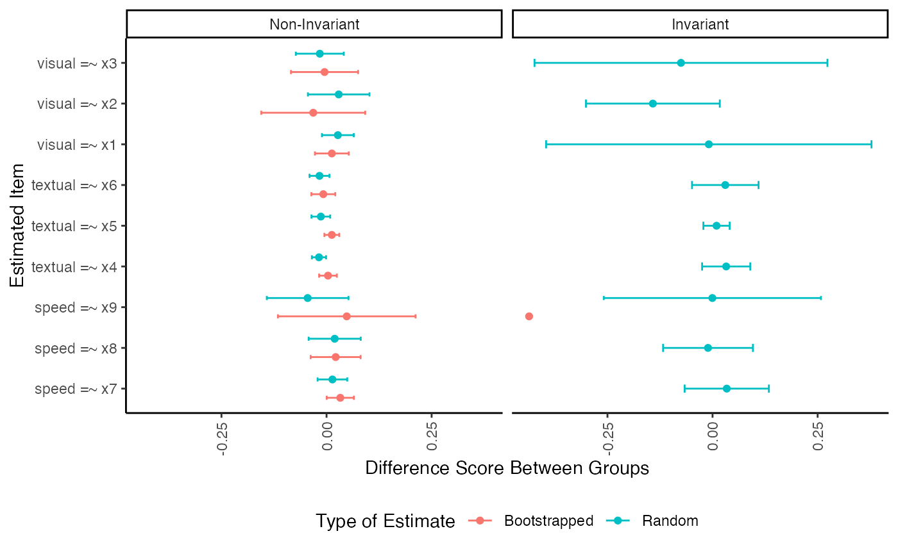
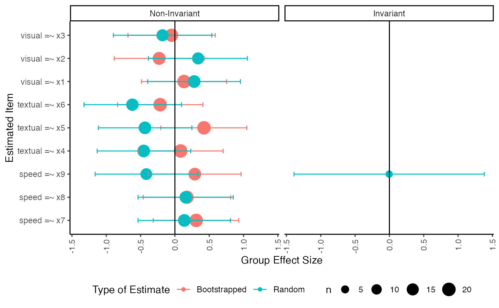

visualizemi Tutorial
Package-Tutorial.Rmd
library(visualizemi)
library(lavaan)
#> This is lavaan 0.6-17
#> lavaan is FREE software! Please report any bugs.
library(knitr)
library(ggplot2)
library(introdataviz)
library(ggridges)Measurement invariance is typically analyzed using confirmatory factor analysis, specifically, multi-group confirmatory factor analysis (MGCFA) or less often, with item response theory (Stark, Chernyshenko, and Drasgow 2006; Tay, Meade, and Cao 2015). First, the model is examined with the factor structure proposed for the latent and observed variables, and then often these models are assessed for each group separately. The two models are then combined together into one nested CFA in order to determine configural invariance. Configural invariance tests if the proposed factor structure is the same between groups. In this model, all other estimated parameters are allowed to vary between groups. The general approach is to use this model as a baseline for starting a sequential analysis of further restrictions between group parameters (i.e., more restrictive with each step). However, models without configural invariance can occur and often point to misspecification for the observed and latent variables within one group (i.e., cross loadings of items onto other latent variables or correlated error terms for one group only).
Next, the estimated parameter between each observed variable and its latent variable are constrained to be equal between groups for metric invariance. For example, item 1’s factor loading must be equal to item 1’s factor loading for each group. This test examines if the items represent the same relationship to the latent variable, or if specific items have weaker or stronger relationships in specific groups. Finding non-invariance at this stage generally points to items that have different functioning or interpretation for one group. At the third model, the item intercepts (i.e., item averages) are restricted across groups for scalar invariance. Scalar non-invariance would indicate that items have the same strength of relationship with their latent variable, just one group has a higher overall average on that item. Last (although sometimes not used), we may consider constraining error variances for each observed variable to be equal across groups for strict invariance. Strict non-invariance can occur when one group has a higher range of values on the observed variable, thus showing a larger variance. For example, if using a Likert scale, one group may use the full 1 to 7 range (creating a flatter distribution and larger variance), while the other group shows a ceiling effect of only using 5 to 7.
Multigroup analysis
If you are interested in measurement invariance, you would likely want to conduct a multigroup factor analysis (MGCFA) to compare two or more groups on proposed model structure. This generally consists of steps of models with increasing restrictions between groups to constrain parameters to be equal across groups. Invariance is achieved by showing that two groups have equal values on the model, and non-invariance occurs when they do not show the same values. Check out excellent book chapters by Brown (2015) and Kline (2016) to learn more about theoretical backgrounds and ideas behind MGCFA.
In R, MGCFA can be achieved by using lavaan - a
structural equation modeling package that covers a large range of
possible modeling options (Rosseel 2012).
Their tutorial on multigroups can be found at: https://lavaan.ugent.be/tutorial/groups.html.
visualizemi includes a MGCFA convenience function that
flexibly calculates the following:
- An overall model without groups
- Individual group based models
- A “configural” model wherein both groups are put together into one model with no constraints
- User entered constraint based models
Additionally, the function returns a list of coefficients and fit statistics for comparison using your favorite rules for determining measurement invariance.
HS.model <- ' visual =~ x1 + x2 + x3
textual =~ x4 + x5 + x6
speed =~ x7 + x8 + x9 '
# cfa model
saved_mgcfa <- mgcfa(model = HS.model,
# dataset in data frame
data = HolzingerSwineford1939,
# grouping variable column
group = "sex",
# lavaan syntax for group constraints
group.equal = c("loadings", "intercepts", "residuals"),
# any other lavaan cfa arguments
meanstructure = TRUE)
# note you can also include sample.nobs, sample.cov, and sample.mean if
# you only have the correlation or covariance matricesThese outputs get very long, so here’s a summary of what’s available
- models are full lavaan model structure, so you can use
summary(), parameterEstimates(),
fitmeasures(), and so on with them. They are commented out
to save space in this tutorial.
| term | op | estimate | std.error | statistic | p.value | std.lv | std.all | std.nox | model | block | group | label |
|---|---|---|---|---|---|---|---|---|---|---|---|---|
| visual =~ x1 | =~ | 1.0000000 | 0.0000000 | NA | NA | 0.8996199 | 0.7718804 | 0.7718804 | Overall | NA | NA | NA |
| visual =~ x2 | =~ | 0.5535003 | 0.0996651 | 5.553601 | 0 | 0.4979399 | 0.4236010 | 0.4236010 | Overall | NA | NA | NA |
| visual =~ x3 | =~ | 0.7293702 | 0.1091097 | 6.684742 | 0 | 0.6561560 | 0.5811323 | 0.5811323 | Overall | NA | NA | NA |
| textual =~ x4 | =~ | 1.0000000 | 0.0000000 | NA | NA | 0.9896926 | 0.8515822 | 0.8515822 | Overall | NA | NA | NA |
| textual =~ x5 | =~ | 1.1130766 | 0.0654201 | 17.014288 | 0 | 1.1016036 | 0.8550654 | 0.8550654 | Overall | NA | NA | NA |
| textual =~ x6 | =~ | 0.9261462 | 0.0554489 | 16.702711 | 0 | 0.9166000 | 0.8380101 | 0.8380101 | Overall | NA | NA | NA |
kable(saved_mgcfa$model_fit)| agfi | AIC | BIC | cfi | chisq | npar | rmsea | rmsea.conf.high | srmr | tli | converged | estimator | ngroups | missing_method | nobs | norig | nexcluded | model |
|---|---|---|---|---|---|---|---|---|---|---|---|---|---|---|---|---|---|
| 0.9911676 | 7535.490 | 7646.703 | 0.9305597 | 85.30552 | 30 | 0.0921215 | 0.1136780 | 0.0595238 | 0.8958395 | TRUE | ML | 1 | listwise | 301 | 301 | 0 | Overall |
| 0.9890620 | 3671.257 | 3760.765 | 0.9063262 | 61.39462 | 30 | 0.1033053 | 0.1356260 | 0.0748731 | 0.8594893 | TRUE | ML | 1 | listwise | 146 | 146 | 0 | Group 1 |
| 0.9911447 | 3846.376 | 3937.679 | 0.9588720 | 44.40059 | 30 | 0.0740542 | 0.1076979 | 0.0525321 | 0.9383081 | TRUE | ML | 1 | listwise | 155 | 155 | 0 | Group 2 |
| 0.9901345 | 7517.633 | 7740.060 | 0.9354408 | 105.79522 | 60 | 0.0894452 | 0.1125390 | 0.0633686 | 0.9031611 | TRUE | ML | 2 | listwise | 301 | 301 | 0 | Configural |
| 0.9890567 | 7526.064 | 7726.248 | 0.9193211 | 126.22602 | 54 | 0.0942718 | 0.1157694 | 0.0740863 | 0.8924281 | TRUE | ML | 2 | listwise | 301 | 301 | 0 | loadings |
| 0.9886175 | 7532.835 | 7710.777 | 0.9050548 | 144.99757 | 48 | 0.0970196 | 0.1172743 | 0.0753072 | 0.8860658 | TRUE | ML | 2 | listwise | 301 | 301 | 0 | intercepts |
| 0.9882086 | 7536.951 | 7681.528 | 0.8904046 | 167.11286 | 39 | 0.0972009 | 0.1160724 | 0.0925800 | 0.8856395 | TRUE | ML | 2 | listwise | 301 | 301 | 0 | residuals |
# overall
saved_mgcfa$model_overall
#> lavaan 0.6.17 ended normally after 35 iterations
#>
#> Estimator ML
#> Optimization method NLMINB
#> Number of model parameters 30
#>
#> Number of observations 301
#>
#> Model Test User Model:
#>
#> Test statistic 85.306
#> Degrees of freedom 24
#> P-value (Chi-square) 0.000
# groups
# saved_mgcfa$group_models$model.1
# saved_mgcfa$group_models$model.2
# configural
# saved_mgcfa$model_configural
# constraints
# saved_mgcfa$invariance_models$model.loadings
# saved_mgcfa$invariance_models$model.intercepts
# saved_mgcfa$invariance_models$model.residualsPartial invariance
Partial invariance occurs when most of the parameter
estimates are the same across groups but not all of them.
visualizemi includes a useful function to investigate which
items are non-invariant. If I use one of the more popular rules of them
for invariance - \(\Delta\)CFI <=
.01 - then I could decide that the loadings are not equal across groups
in comparison to the configural model. I would use the
partial_mi() function to figure out how the items change
the model with their constraint is relaxed individually across groups.
You get a table of fit indices to review for your favorite invariance
rules and each model saved separately to determine partial
invariance.
# a saved model from mgcfa or any lavaan model
saved_partial <- partial_mi(saved_model = saved_mgcfa$invariance_models$model.loadings,
# dataframe of the original data
data = HolzingerSwineford1939,
# model syntax from lavaan
model = HS.model,
# group variable column
group = "sex",
# the equality constraints you have in the model
group.equal = c("loadings"),
# which step to test the partial invariance on
partial_step = "loadings")
# note that the group.equal and partial_step are not always the same
kable(saved_partial$fit_table)| free.parameter | npar | fmin | chisq | df | pvalue | baseline.chisq | baseline.df | baseline.pvalue | cfi | tli | nnfi | rfi | nfi | pnfi | ifi | rni | logl | unrestricted.logl | aic | bic | ntotal | bic2 | rmsea | rmsea.ci.lower | rmsea.ci.upper | rmsea.ci.level | rmsea.pvalue | rmsea.close.h0 | rmsea.notclose.pvalue | rmsea.notclose.h0 | rmr | rmr_nomean | srmr | srmr_bentler | srmr_bentler_nomean | crmr | crmr_nomean | srmr_mplus | srmr_mplus_nomean | cn_05 | cn_01 | gfi | agfi | pgfi | mfi | ecvi |
|---|---|---|---|---|---|---|---|---|---|---|---|---|---|---|---|---|---|---|---|---|---|---|---|---|---|---|---|---|---|---|---|---|---|---|---|---|---|---|---|---|---|---|---|---|---|---|
| visual =~ x1 | 54 | 0.2096778 | 126.2260 | 54 | 1.025522e-07 | 967.2277 | 72 | 0 | 0.9193211 | 0.8924281 | 0.8924281 | 0.8259961 | 0.8694971 | 0.6521228 | 0.9209113 | 0.9193211 | -3709.032 | -3645.919 | 7526.064 | 7726.248 | 301 | 7554.990 | 0.09427178 | 0.07294522 | 0.1157694 | 0.9 | 0.0006413723 | 0.05 | 0.8700985 | 0.08 | 0.09083246 | 0.09950198 | 0.07408629 | 0.07408629 | 0.08115747 | 0.07588300 | 0.08483978 | 0.08701594 | 0.07888117 | 173.0574 | 194.3175 | 0.9945284 | 0.9890567 | 0.4972642 | 0.8869410 | 0.7781595 |
| visual =~ x2 | 55 | 0.2079012 | 125.1565 | 53 | 9.021992e-08 | 967.2277 | 72 | 0 | 0.9193987 | 0.8905039 | 0.8905039 | 0.8242152 | 0.8706028 | 0.6408604 | 0.9210738 | 0.9193987 | -3708.497 | -3645.919 | 7526.994 | 7730.885 | 301 | 7556.457 | 0.09511119 | 0.07364915 | 0.1167678 | 0.9 | 0.0005618577 | 0.05 | 0.8813839 | 0.08 | 0.09049956 | 0.09913730 | 0.07397906 | 0.07397906 | 0.08104000 | 0.07625079 | 0.08525098 | 0.08660733 | 0.07895012 | 171.7384 | 193.0223 | 0.9946187 | 0.9890343 | 0.4880999 | 0.8870434 | 0.7812509 |
| visual =~ x3 | 55 | 0.2046712 | 123.2120 | 53 | 1.616199e-07 | 967.2277 | 72 | 0 | 0.9215707 | 0.8934546 | 0.8934546 | 0.8269462 | 0.8726132 | 0.6423403 | 0.9232007 | 0.9215707 | -3707.525 | -3645.919 | 7525.050 | 7728.941 | 301 | 7554.512 | 0.09382091 | 0.07225866 | 0.1155457 | 0.9 | 0.0008021491 | 0.05 | 0.8605127 | 0.08 | 0.08746822 | 0.09581663 | 0.07179944 | 0.07179944 | 0.07865235 | 0.07470824 | 0.08352635 | 0.08316932 | 0.07693722 | 174.4330 | 196.0527 | 0.9946997 | 0.9891995 | 0.4881397 | 0.8899132 | 0.7747909 |
| textual =~ x4 | 54 | 0.2096778 | 126.2260 | 54 | 1.025522e-07 | 967.2277 | 72 | 0 | 0.9193211 | 0.8924281 | 0.8924281 | 0.8259961 | 0.8694971 | 0.6521228 | 0.9209113 | 0.9193211 | -3709.032 | -3645.919 | 7526.064 | 7726.248 | 301 | 7554.990 | 0.09427178 | 0.07294522 | 0.1157694 | 0.9 | 0.0006413723 | 0.05 | 0.8700985 | 0.08 | 0.09083246 | 0.09950198 | 0.07408629 | 0.07408629 | 0.08115747 | 0.07588300 | 0.08483978 | 0.08701594 | 0.07888117 | 173.0574 | 194.3175 | 0.9945284 | 0.9890567 | 0.4972642 | 0.8869410 | 0.7781595 |
| textual =~ x5 | 55 | 0.2087596 | 125.6733 | 53 | 7.719583e-08 | 967.2277 | 72 | 0 | 0.9188215 | 0.8897197 | 0.8897197 | 0.8234894 | 0.8700686 | 0.6404672 | 0.9205086 | 0.9188215 | -3708.756 | -3645.919 | 7527.511 | 7731.402 | 301 | 7556.973 | 0.09545114 | 0.07401474 | 0.1170901 | 0.9 | 0.0005105831 | 0.05 | 0.8865094 | 0.08 | 0.09058154 | 0.09922711 | 0.07396705 | 0.07396705 | 0.08102684 | 0.07593932 | 0.08490274 | 0.08666555 | 0.07878154 | 171.0364 | 192.2328 | 0.9945417 | 0.9888775 | 0.4880621 | 0.8862824 | 0.7829676 |
| textual =~ x6 | 55 | 0.2094712 | 126.1017 | 53 | 6.781510e-08 | 967.2277 | 72 | 0 | 0.9183429 | 0.8890697 | 0.8890697 | 0.8228877 | 0.8696257 | 0.6401411 | 0.9200400 | 0.9183429 | -3708.970 | -3645.919 | 7527.939 | 7731.831 | 301 | 7557.402 | 0.09573207 | 0.07431662 | 0.1173566 | 0.9 | 0.0004714805 | 0.05 | 0.8906284 | 0.08 | 0.09083322 | 0.09950281 | 0.07410183 | 0.07410183 | 0.08117449 | 0.07591724 | 0.08487806 | 0.08692868 | 0.07887388 | 170.4587 | 191.5831 | 0.9945223 | 0.9888379 | 0.4880526 | 0.8856519 | 0.7843909 |
| speed =~ x7 | 54 | 0.2096778 | 126.2260 | 54 | 1.025522e-07 | 967.2277 | 72 | 0 | 0.9193211 | 0.8924281 | 0.8924281 | 0.8259961 | 0.8694971 | 0.6521228 | 0.9209113 | 0.9193211 | -3709.032 | -3645.919 | 7526.064 | 7726.248 | 301 | 7554.990 | 0.09427178 | 0.07294522 | 0.1157694 | 0.9 | 0.0006413723 | 0.05 | 0.8700985 | 0.08 | 0.09083246 | 0.09950198 | 0.07408629 | 0.07408629 | 0.08115747 | 0.07588300 | 0.08483978 | 0.08701594 | 0.07888117 | 173.0574 | 194.3175 | 0.9945284 | 0.9890567 | 0.4972642 | 0.8869410 | 0.7781595 |
| speed =~ x8 | 55 | 0.1956719 | 117.7945 | 53 | 7.944429e-07 | 967.2277 | 72 | 0 | 0.9276224 | 0.9016757 | 0.9016757 | 0.8345553 | 0.8782143 | 0.6464633 | 0.9291266 | 0.9276224 | -3704.816 | -3645.919 | 7519.632 | 7723.523 | 301 | 7549.095 | 0.09012863 | 0.06825194 | 0.1120610 | 0.9 | 0.0020887270 | 0.05 | 0.7884347 | 0.08 | 0.08505258 | 0.09317044 | 0.06962993 | 0.06962993 | 0.07627577 | 0.07185163 | 0.08033257 | 0.07951405 | 0.07475212 | 182.4095 | 205.0236 | 0.9949273 | 0.9896632 | 0.4882514 | 0.8979580 | 0.7567922 |
| speed =~ x9 | 55 | 0.1829277 | 110.1225 | 53 | 6.944395e-06 | 967.2277 | 72 | 0 | 0.9361922 | 0.9133178 | 0.9133178 | 0.8453308 | 0.8861463 | 0.6523021 | 0.9375183 | 0.9361922 | -3700.980 | -3645.919 | 7511.960 | 7715.851 | 301 | 7541.423 | 0.08462473 | 0.06218782 | 0.1069052 | 0.9 | 0.0073729473 | 0.05 | 0.6513022 | 0.08 | 0.08091091 | 0.08863346 | 0.06704524 | 0.06704524 | 0.07344438 | 0.07139784 | 0.07982521 | 0.06937939 | 0.07245304 | 195.0479 | 219.2374 | 0.9954041 | 0.9906347 | 0.4884853 | 0.9094749 | 0.7313039 |
# saved_partial$models$`visual =~ x1`
# saved_partial$models$`visual =~ x2`
# and so onIn our case, one parameter speed =~ x9 clearly can
improve the overall model to be equal to the original configural model.
I could then keep exploring steps and/or partial invariance for other
constraints.
saved_mgcfa.partial <- mgcfa(model = HS.model,
# dataset in data frame
data = HolzingerSwineford1939,
# grouping variable column
group = "sex",
# lavaan syntax for group constraints
group.equal = c("loadings", "intercepts", "residuals"),
# any other lavaan cfa arguments
meanstructure = TRUE,
group.partial = c("speed =~ x9")
)
kable(saved_mgcfa.partial$model_fit)| agfi | AIC | BIC | cfi | chisq | npar | rmsea | rmsea.conf.high | srmr | tli | converged | estimator | ngroups | missing_method | nobs | norig | nexcluded | model |
|---|---|---|---|---|---|---|---|---|---|---|---|---|---|---|---|---|---|
| 0.9911676 | 7535.490 | 7646.703 | 0.9305597 | 85.30552 | 30 | 0.0921215 | 0.1136780 | 0.0595238 | 0.8958395 | TRUE | ML | 1 | listwise | 301 | 301 | 0 | Overall |
| 0.9890620 | 3671.257 | 3760.765 | 0.9063262 | 61.39462 | 30 | 0.1033053 | 0.1356260 | 0.0748731 | 0.8594893 | TRUE | ML | 1 | listwise | 146 | 146 | 0 | Group 1 |
| 0.9911447 | 3846.376 | 3937.679 | 0.9588720 | 44.40059 | 30 | 0.0740542 | 0.1076979 | 0.0525321 | 0.9383081 | TRUE | ML | 1 | listwise | 155 | 155 | 0 | Group 2 |
| 0.9901345 | 7517.633 | 7740.060 | 0.9354408 | 105.79522 | 60 | 0.0894452 | 0.1125390 | 0.0633686 | 0.9031611 | TRUE | ML | 2 | listwise | 301 | 301 | 0 | Configural |
| 0.9906347 | 7511.960 | 7715.851 | 0.9361922 | 110.12247 | 55 | 0.0846247 | 0.1069052 | 0.0670452 | 0.9133178 | TRUE | ML | 2 | listwise | 301 | 301 | 0 | loadings |
| 0.9900717 | 7519.422 | 7701.070 | 0.9211555 | 129.58375 | 49 | 0.0891575 | 0.1099955 | 0.0723841 | 0.9037830 | TRUE | ML | 2 | listwise | 301 | 301 | 0 | intercepts |
| 0.9896637 | 7522.363 | 7670.647 | 0.9078166 | 150.52509 | 40 | 0.0897988 | 0.1091696 | 0.0846108 | 0.9023941 | TRUE | ML | 2 | listwise | 301 | 301 | 0 | residuals |
Plotting MI
The package then includes a visualization tool for the measurement
invariance. Plots are parameter specific, so we could examine
speed =~ x9 for the strength and direction of the
invariance.
# a table of tidy coefficients, use broom::tidy
# and create "model" column if you don't use mgcfa
# be sure to use the partial model or one with out
# constraints or this graph will be boring
saved_mi_plots <- plot_mi(data_coef = saved_mgcfa.partial$model_coef,
# which model do you want to plot from model column
model_step = "loadings",
# name of observed item
item_name = "x9",
# LV limits to graph
x_limits = c(-1,1),
# Y min and max in data
y_limits = c(min(HolzingerSwineford1939$x9),
max(HolzingerSwineford1939$x9)),
# what ci do you want
conf.level = .95,
# what model results do you want
model_results = saved_mgcfa.partial$invariance_models$model.loadings,
# which latent is the observed variable on
# important for cross-loaded variables
lv_name = "speed",
# if you have more than two groups, which two do you want
plot_groups = NULL)
saved_mi_plots$complete
The plots are explained at length in the preprint: https://osf.io/9hzfe/ but short version:
Observed variable information:
- Intercepts are plotted on the left side as the dots on the y-axis
- Loadings are plotted as theh slope of the lines on the left hand side
- Residuals are plotted as the geom violin on the left hand side
Latent variable information:
- LV distribution is plotted on the right hand side
- LV means are represented as the solid lines for each group
This plot is the combination of three smaller plots, and they are
included separately so you can modify them with ggplot2 if
you like. We can clearly see that group 1 has a shallower slope (i.e., a
smaller factor loading) than group 2.
Pre-registration, replication, and registered reports
Several unanswered questions:
- How big is this effect? - We could use \(d_{macs}\), however this statistic is based on intercepts and loadings simultaneously.
- How much should I expect this model to replicate? - If I believe that this data is truly representative of the population, how does this model replicate in comparison to a random model?
This information would give you an idea of what to expect in a potential replication and/o pre-registration.
Replication at model level
Here we will bootstrap the mgcfa procedure to determine the “replication rate” if our data was representative of the true population. The data is bootstrapped and the steps for MGCFA are examined for invariance. This model is compared to a model of the bootstrapped data with random group assignment.
saved_boot_model <- bootstrap_model(
# saved configural model to start at
saved_configural = saved_mgcfa$model_configural,
# dataset for the analysis
data = HolzingerSwineford1939,
# model lavaan syntax
model = HS.model,
# group variable in the dataset
group = "sex",
# number of bootstraps
# this is set to a low number to compile quickly for cran
nboot = 10,
# name of the fit measure you want to use, make sure it's lavaan
invariance_index = "cfi",
# rule for the difference in fit indices
invariance_rule = .01,
# what order of steps do you want to test?
group.equal = c("loadings", "intercepts", "residuals")
)
#> Finished Bootstrap Number: 1
#> Finished Bootstrap Number: 2
#> Finished Bootstrap Number: 3
#> Finished Bootstrap Number: 4
#> Finished Bootstrap Number: 5
#> Finished Bootstrap Number: 6
#> Finished Bootstrap Number: 7
#> Finished Bootstrap Number: 8
#> Finished Bootstrap Number: 9
#> Finished Bootstrap Number: 10
kable(saved_boot_model)| model | non_invariant | random_non_invariant | h_nmi | h_mi | h_nmi_p | h_mi_p |
|---|---|---|---|---|---|---|
| intercepts | 0.3 | 0 | 1.159280 | -1.159280 | 0.3690101 | -0.3690101 |
| loadings | 0.7 | 0 | 1.982313 | -1.982313 | 0.6309899 | -0.6309899 |
This data tells you the proportion of values that were non-invariant
for the bootstrapped and random models. Note: this may not add up to
n_boot because sometimes models fail to converge.
h represents the effect size comparison of the two
proportions (much like a \(d\) value).
We can see that it’s likely that our model would not show invariance for
all parameters compared to a random model for the loadings.
Size of the effect and replication at parameter level
In this function, we will bootstrap our model (up to the step we claim partial invariance) to determine our replication rate and effect size. Note: this function is slow depending on the number parameters, bootstraps, and computer size.
- The saved dataframe of the estimates for each group’s
standardized loading using
std.allfor the original model and the random model. This value is like a \(\beta\) or effect size - so we can use it to determine what the effect size of the difference would be if they were constrained to equal or not. This dataframe is included if you want to make your own graphs. - The summary dataframe of the bootstrapped results. Note: you will
see NAs when you do not have enough values that fall into the
“invariant” or “non-invariant” separation. Effect sizes are calculated
with
calculate_d()assuming between subjects grouping (group 1 versus group 2) using the average standardized parameter as the mean and the average standard deviation of that parameter as the standard deviation. A minimum of 10% of bootstraps is required for the effect size to calculate. - A forest plot style graph of the mean group differences.
- A forest plot style graph of the effect sizes of the group differences with emphasis on the number of bootstraps included in each calculation.
Note: invariance is FALSE for non-invariant, TRUE for invariant
using:
(original model fit - model relaxed fit) <= rule
The last three are ggplot objects, so you can edit them from the saved output.
saved_boot_partial <- bootstrap_partial(
# the model you want to test
# use the model before your invariant one
# similar set up to partial_mi
saved_model = saved_mgcfa.partial$model_configural,
# the dataframe
data = HolzingerSwineford1939,
# the original model syntax
model = HS.model,
# the grouping variable column
group = "sex",
# run more, but this package vignette needs to knit fast
nboot = 20,
# what index are you using for invariance?
# match this to lavaan's name under fitmeasures()
invariance_index = "cfi",
# what rule are you using?
invariance_rule = .01,
# what are we comparing against?
invariance_compare = unname(fitmeasures(saved_mgcfa.partial$model_configural, "cfi")),
# which step you want to estimate effect size for
partial_step = c("loadings"),
# which parameters you want to hold constrained
group.equal = c("loadings")
)
#> Finished Bootstrap Number: 1
#> Finished Bootstrap Number: 2
#> Finished Bootstrap Number: 3
#> Finished Bootstrap Number: 4
#> Finished Bootstrap Number: 5
#> Finished Bootstrap Number: 6
#> Finished Bootstrap Number: 7
#> Finished Bootstrap Number: 8
#> Finished Bootstrap Number: 9
#> Finished Bootstrap Number: 10
#> Finished Bootstrap Number: 11
#> Finished Bootstrap Number: 12
#> Finished Bootstrap Number: 13
#> Finished Bootstrap Number: 14
#> Finished Bootstrap Number: 15
#> Finished Bootstrap Number: 16
#> Finished Bootstrap Number: 17
#> Finished Bootstrap Number: 18
#> Finished Bootstrap Number: 19
#> Finished Bootstrap Number: 20
kable(head(saved_boot_partial$boot_DF))| term | boot_1 | boot_2 | random_1 | random_2 | boot_fit | random_fit | boot_difference | random_difference | boot_index_difference | random_index_difference |
|---|---|---|---|---|---|---|---|---|---|---|
| visual =~ x1 | 0.7622804 | 0.6917330 | 0.7210561 | 0.7677601 | 0.8799049 | 0.9328097 | 0.0705474 | -0.0467040 | FALSE | TRUE |
| visual =~ x2 | 0.5541882 | 0.2681671 | 0.4070080 | 0.4441750 | 0.8800388 | 0.9317609 | 0.2860210 | -0.0371670 | FALSE | TRUE |
| visual =~ x3 | 0.6409211 | 0.5377987 | 0.5550771 | 0.6133640 | 0.8788512 | 0.9317627 | 0.1031223 | -0.0582869 | FALSE | TRUE |
| textual =~ x4 | 0.8365101 | 0.8142612 | 0.8193490 | 0.8298972 | 0.8799049 | 0.9328097 | 0.0222489 | -0.0105482 | FALSE | TRUE |
| textual =~ x5 | 0.8534776 | 0.9178727 | 0.8752882 | 0.8957469 | 0.8819863 | 0.9358723 | -0.0643951 | -0.0204587 | FALSE | TRUE |
| textual =~ x6 | 0.8627863 | 0.8495805 | 0.8795604 | 0.8186844 | 0.8797531 | 0.9322245 | 0.0132058 | 0.0608760 | FALSE | TRUE |
kable(saved_boot_partial$boot_summary)| term | invariant | mean_boot_1 | mean_boot_2 | sd_boot_1 | sd_boot_2 | mean_boot_difference | sd_boot_difference | mean_boot_fit | sd_boot_fit | n_boot | mean_random_1 | mean_random_2 | sd_random_1 | sd_random_2 | mean_random_difference | sd_random_difference | mean_random_fit | sd_random_fit | n_random | d_boot_low | d_boot | d_boot_high | d_random_low | d_random | d_random_high |
|---|---|---|---|---|---|---|---|---|---|---|---|---|---|---|---|---|---|---|---|---|---|---|---|---|---|
| speed =~ x7 | FALSE | 0.5196211 | 0.5080851 | 0.1076394 | 0.1150163 | 0.0115360 | 0.0887230 | 0.8690023 | 0.0195453 | 19 | 0.5264127 | 0.5251088 | 0.0907479 | 0.0808700 | 0.0013038 | 0.0555496 | 0.9027967 | 0.0145039 | 16 | -0.5334934 | 0.1035652 | 0.7391925 | -0.6779188 | 0.0151695 | 0.7080061 |
| speed =~ x8 | FALSE | 0.7795141 | 0.6839817 | 0.0945686 | 0.1191939 | 0.0955324 | 0.1571052 | 0.8753826 | 0.0172632 | 17 | 0.6853855 | 0.6994146 | 0.1015175 | 0.0919236 | -0.0140291 | 0.0930860 | 0.9016096 | 0.0141866 | 14 | 0.1753468 | 0.8879455 | 1.5879826 | -0.8853198 | -0.1448698 | 0.5983446 |
| speed =~ x9 | FALSE | 0.6457105 | 0.7004198 | 0.1924116 | 0.1957149 | -0.0547093 | 0.3778449 | 0.8831801 | 0.0185805 | 17 | 0.7047374 | 0.7028886 | 0.1137276 | 0.0946776 | 0.0018488 | 0.1594564 | 0.9003040 | 0.0125376 | 13 | -0.9555058 | -0.2819048 | 0.3960393 | -0.7512912 | 0.0176691 | 0.7862632 |
| textual =~ x4 | FALSE | 0.8486367 | 0.8409722 | 0.0285865 | 0.0386116 | 0.0076645 | 0.0459136 | 0.8690023 | 0.0195453 | 19 | 0.8354978 | 0.8400173 | 0.0296516 | 0.0261268 | -0.0045196 | 0.0273024 | 0.9027967 | 0.0145039 | 16 | -0.4139445 | 0.2256200 | 0.8620820 | -0.8545440 | -0.1617324 | 0.5337541 |
| textual =~ x5 | FALSE | 0.8684702 | 0.8615105 | 0.0250995 | 0.0279970 | 0.0069598 | 0.0383451 | 0.8697807 | 0.0197687 | 19 | 0.8596082 | 0.8678306 | 0.0254790 | 0.0234293 | -0.0082224 | 0.0366053 | 0.9015160 | 0.0143936 | 15 | -0.3787739 | 0.2617661 | 0.8987146 | -1.0540163 | -0.3359419 | 0.3880182 |
| textual =~ x6 | FALSE | 0.8379896 | 0.8337553 | 0.0358525 | 0.0384939 | 0.0042343 | 0.0662491 | 0.8697178 | 0.0199661 | 19 | 0.8240566 | 0.8346934 | 0.0219759 | 0.0272913 | -0.0106368 | 0.0345482 | 0.8994451 | 0.0124834 | 14 | -0.5233872 | 0.1138350 | 0.7494845 | -1.1751386 | -0.4293090 | 0.3245439 |
| visual =~ x1 | FALSE | 0.7617583 | 0.7717427 | 0.0536802 | 0.0936449 | -0.0099843 | 0.0953033 | 0.8690023 | 0.0195453 | 19 | 0.7586218 | 0.7528580 | 0.0783687 | 0.0622790 | 0.0057639 | 0.0677692 | 0.9027967 | 0.0145039 | 16 | -0.7665190 | -0.1308135 | 0.5066984 | -0.6124997 | 0.0814309 | 0.7740114 |
| visual =~ x2 | FALSE | 0.3976032 | 0.3947906 | 0.1561932 | 0.1451780 | 0.0028126 | 0.2856944 | 0.8699898 | 0.0194511 | 19 | 0.4140464 | 0.4166509 | 0.0715416 | 0.1150273 | -0.0026045 | 0.1446466 | 0.9026524 | 0.0145275 | 16 | -0.6173871 | 0.0186528 | 0.6544345 | -0.7199508 | -0.0271907 | 0.6660207 |
| visual =~ x3 | FALSE | 0.6110966 | 0.5749235 | 0.1118974 | 0.1251645 | 0.0361731 | 0.2108404 | 0.8746856 | 0.0200062 | 20 | 0.5759008 | 0.5787354 | 0.0625802 | 0.1019542 | -0.0028347 | 0.1223575 | 0.8999143 | 0.0145015 | 16 | -0.3208174 | 0.3047016 | 0.9262711 | -0.7262358 | -0.0335105 | 0.6597709 |
kable(saved_boot_partial$boot_effects)| term | non_invariant | random_non_invariant | h_nmi | h_mi | h_nmi_p | h_mi_p |
|---|---|---|---|---|---|---|
| speed =~ x7 | 0.95 | 0.80 | 0.4762684 | -0.4762684 | 0.1516009 | -0.1516009 |
| speed =~ x8 | 0.85 | 0.70 | 0.3638807 | -0.3638807 | 0.1158268 | -0.1158268 |
| speed =~ x9 | 0.85 | 0.65 | 0.4707048 | -0.4707048 | 0.1498300 | -0.1498300 |
| textual =~ x4 | 0.95 | 0.80 | 0.4762684 | -0.4762684 | 0.1516009 | -0.1516009 |
| textual =~ x5 | 0.95 | 0.75 | 0.5961707 | -0.5961707 | 0.1897670 | -0.1897670 |
| textual =~ x6 | 0.95 | 0.70 | 0.7082527 | -0.7082527 | 0.2254438 | -0.2254438 |
| visual =~ x1 | 0.95 | 0.80 | 0.4762684 | -0.4762684 | 0.1516009 | -0.1516009 |
| visual =~ x2 | 0.95 | 0.80 | 0.4762684 | -0.4762684 | 0.1516009 | -0.1516009 |
| visual =~ x3 | 1.00 | 0.80 | 0.9272952 | -0.9272952 | 0.2951672 | -0.2951672 |
saved_boot_partial$invariance_plot
saved_boot_partial$effect_invariance_plot
saved_boot_partial$density_plot
#> Picking joint bandwidth of NaN
#> Picking joint bandwidth of 0.027
#> Picking joint bandwidth of 0.0448
#> Picking joint bandwidth of 0.03
I can see very few models are considered “invariant” when individually relaxing the parameters. These three parameters are the same ones that showed as the top items to relax to create an invariant model BUT that doesn’t bootstrap consistently, so it may not replicate. The randomly assigned group models show an even split of replication, which you would expect, given it’s “random”.
The boot effects dataframe gives me a potential size of the non-invariant effect compared to random, illuminating the items that may not replicate, and my boot summary gives me effect sizes differences between groups for bootstrapped and random data. I could subtract these differences to tell how big one might expect them to be as compared to random or simply review them in my invariance plots.